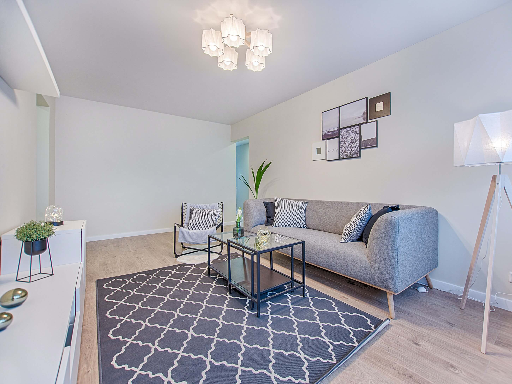
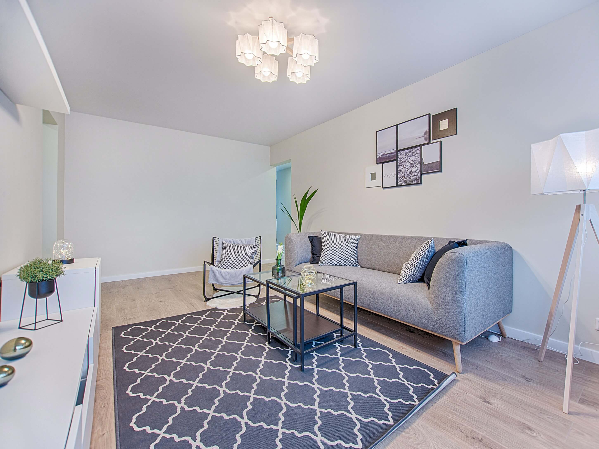

Atracción de Clientes Potenciales: Al ofrecer fotografías profesionales de alta calidad, las inmobiliarias generan un mayor interés entre los posibles compradores, lo que conduce a un aumento en las visitas a las propiedades y, en última instancia, a una mayor probabilidad de cierre de ventas .
Diferenciación y Prestigio: La fotografía profesional agrega valor a la imagen de una inmobiliaria, destacándola entre la competencia. Los clientes perciben una empresa que invierte en presentar sus propiedades de manera visualmente atractiva como más profesional y confiable.
Mayor Visibilidad en Línea: Las imágenes de calidad impulsan el posicionamiento en los motores de búsqueda y las redes sociales, lo que aumenta la visibilidad en línea de las propiedades y, por ende, de la inmobiliaria.
Eficiencia en la Captación de Clientes: Al mostrar imágenes precisas y detalladas desde el principio, las agencias inmobiliarias pueden filtrar a los clientes que realmente están interesados, lo que ahorra tiempo y recursos tanto para los agentes como para los compradores.
Potencial para Mayor Valor de Venta: Los inmuebles con fotografías profesionales bien presentados pueden percibirse con un mayor valor, lo que puede justificar precios más altos y, en última instancia, resultar en mayores márgenes de ganancia para la inmobiliaria.